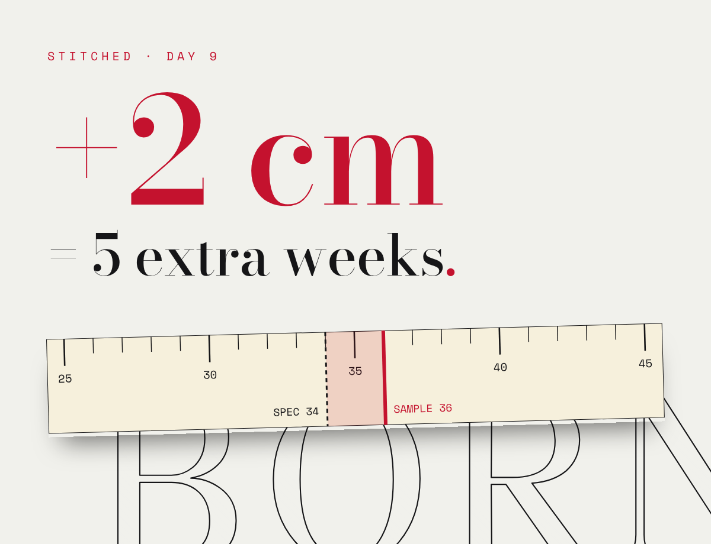
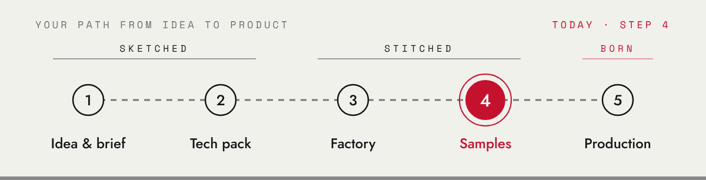
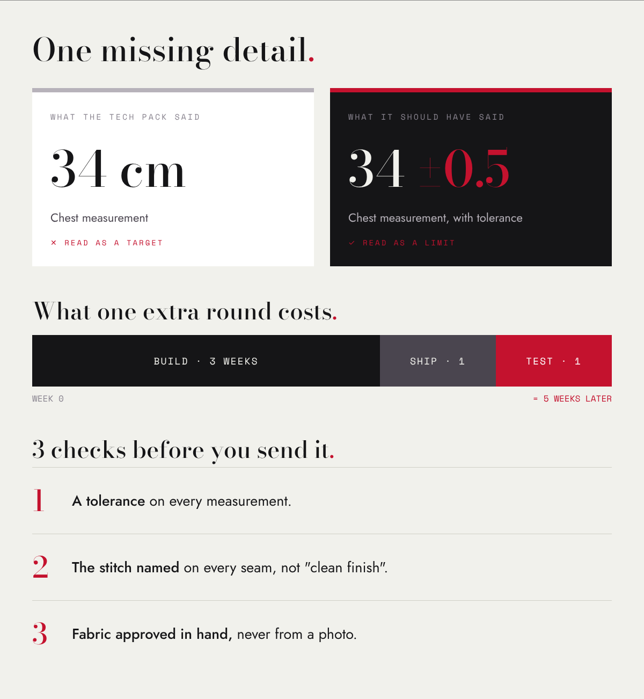

| BORRADOR · Este caso está escrito a partir de un error habitual de desarrollo. Hay que reemplazarlo con uno de los casos reales de María (sin nombres) antes de activar el email. Quitar este recuadro al publicar. | ||
| ||
 | ||
 | ||
Hi {{ customer.first_name | default: "there" }}, A founder approved a chest measurement with no tolerance. The tech pack said "34 cm" and nothing else. The factory read it as a target, not a limit, and the first sample came back 2 cm wide. | ||
 | ||
Page 16 of your kit has five more mistakes like this one, each with how to close it before your tech pack goes out.
María Founder · Born Apparel Studio | ||
|
1:1 consultation A second pair of eyes before you send it. Book 30 minutes ($100) or 60 minutes ($200) with me. We go through your tech pack, costs or factory plan and find the gaps before a factory does.
| ||
| ||
Stitched to be BORN. Sketched · Stitched · BORN |